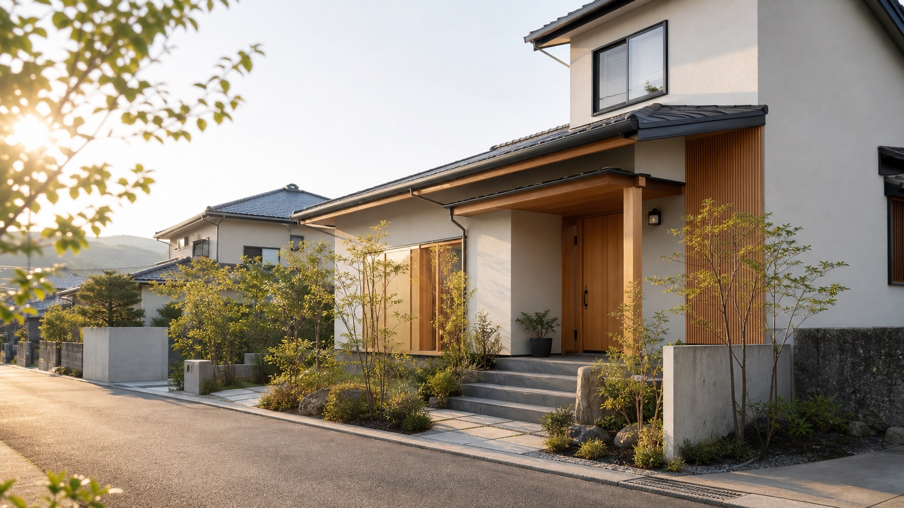
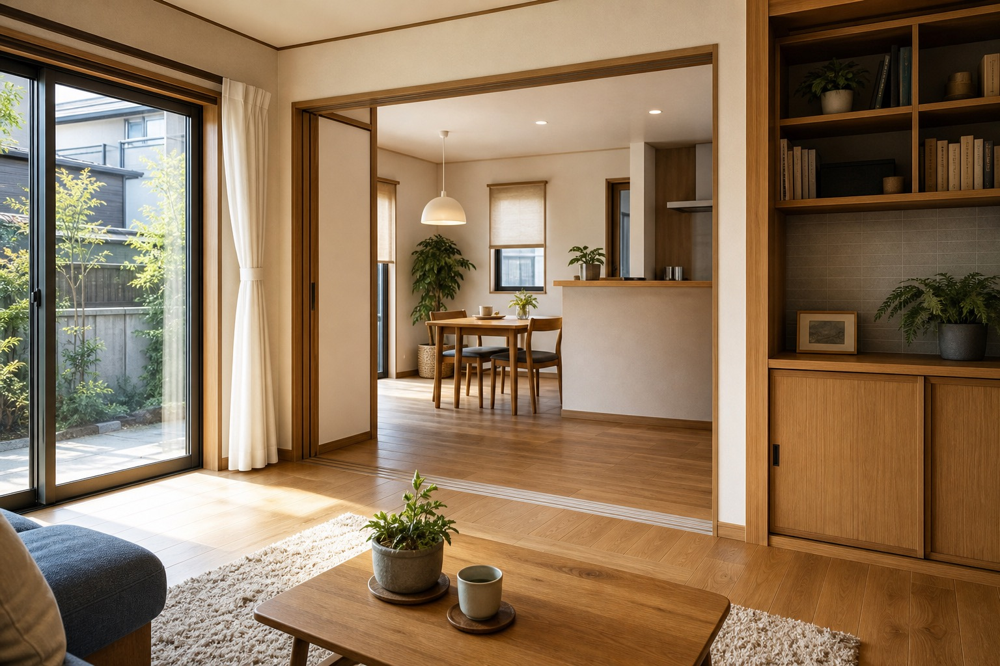
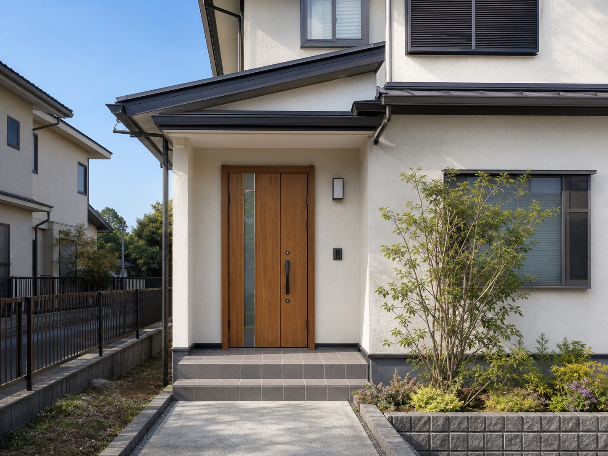
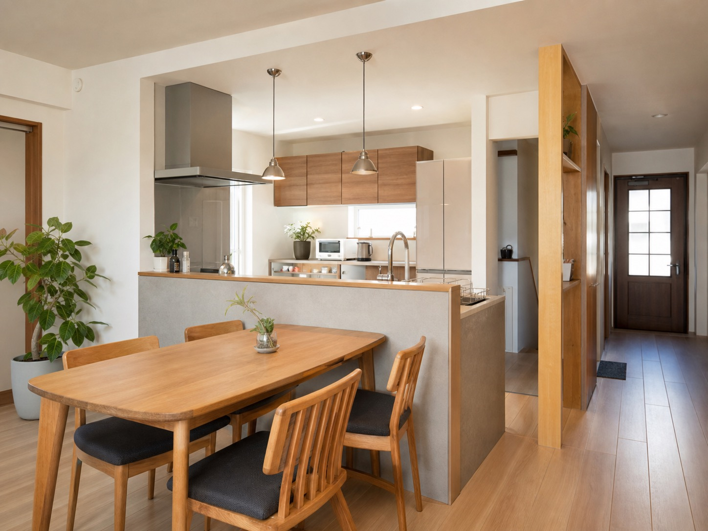
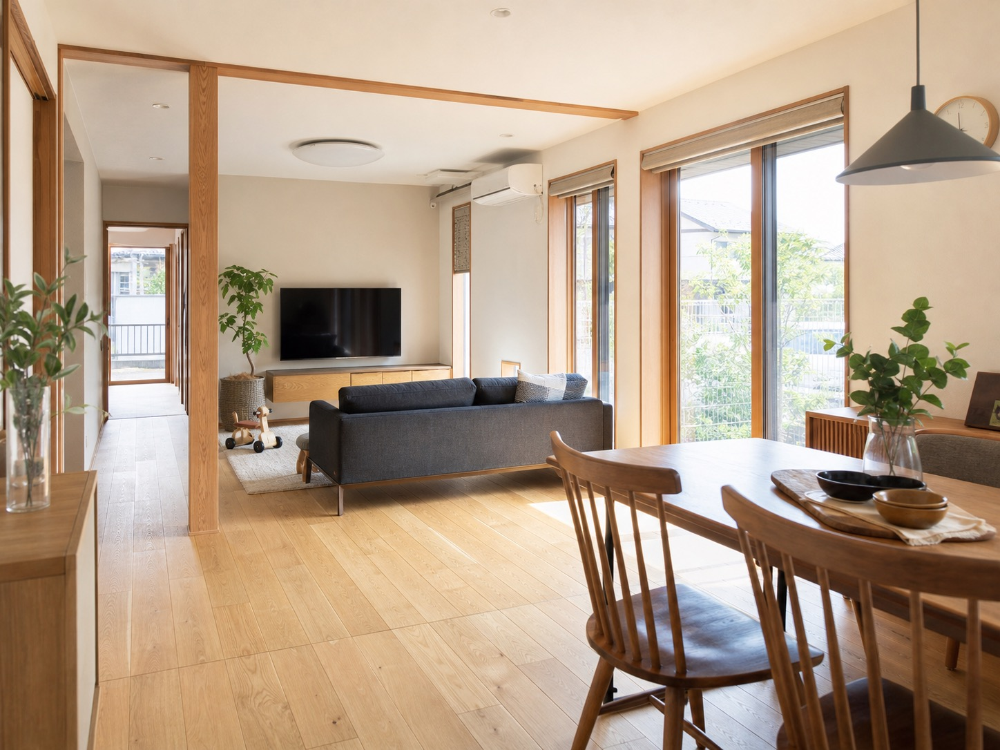

内装リフォーム
クロス・床材の張り替えなど、部屋の印象と使い心地を整える工事。

仮画像このページは営業提案用サンプルです。公式サイトではありません。
塚本工務店は、姶良市でリフォーム工事を行う工務店です。公式サイトでは、現状の困りごとを丁寧に聞き取り、最適なプランを提案する姿勢が伝えられています。
福祉住環境コーディネーター、リフォームスタイリストの資格を活かし、段差や手すりなどのバリアフリー相談にも対応できる点を、見やすく伝える構成にしています。

公式サイトで確認できる業務内容を、相談しやすい入口として整理しました。
クロス・床材の張り替えなど、部屋の印象と使い心地を整える工事。
外壁・屋根まわりのメンテナンスや、住まいを長く保つための改修。
キッチン・トイレなど、清潔さと動線を考えた暮らしやすい水回りへ。
二世帯化、間取り変更、バリアフリー化など、既存の家を活かす改修。
コンセントまわりからオール電化まで、住まいの電気に関する工事。
住まいの印象と機能を整える、外回りのリフォーム相談。
ヒアリング重視困りごとを聞き取り、現状に合わせたプランを提案。
バリアフリー相談福祉住環境コーディネーター、リフォームスタイリストの資格を確認済み。
姶良市中心の対応地域の住まいを対象に、内外装から設備まで横断的に相談可能。
求人・協力会社募集案件増に伴う正社員求人、協力会社・個人事業主募集の導線を反映。
公式サイトで確認できる事例名のみ掲載。画像は差し替え前提の仮画像です。



Consult / Recruit
公開前には、内容の再確認と正式な表記確認が必要です。
Contact
電話またはメール相談へ自然につながる、提案用のデモフォームです。
このフォームは営業提案用サンプルです。実際には送信されません。